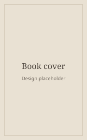

Readers pick one in Settings. “Match device” switches between Daylight and Lamplight with the phone's dark mode. Every text pairing and status colour below passes WCAG AA (4.5:1 or better). Ratios are measured against the surface the text sits on.
Daylight
Default. Warm paper, forest green actions, wood shelves.

The HobbitJ.R.R. Tolkien
On the shelf2 of 3 copies · Call no. 823 TOL
Save to shelfOpen catalog
Surfaces and text
Background#FAF7F1
Surface#FFFFFF
Fill (fields, chips)#EFE9DF
Text#1F1A17 · 17.2
Secondary text#6B6259 · 6.0
Accent, links#2F5340 · 8.6
Shelf wood#C19062
Status
On the shelf5.2
All copies out5.0
Check the edition5.1
Read at the library6.5
Couldn't check6.6
Lamplight
True dark for night reading. Warm black, never pure #000. Sage actions, dark walnut shelves.
The HobbitJ.R.R. Tolkien
On the shelf2 of 3 copies · Call no. 823 TOL
Save to shelfOpen catalog
Surfaces and text
Background#15120F
Surface#1F1B17
Fill (fields, chips)#2B2621
Text#F1E9DC · 14.2
Secondary text#A89D8C · 6.4
Accent, links#9FD0AE · 9.9
Shelf wood#6E4A30
Status
On the shelf9.2
All copies out7.5
Check the edition9.1
Read at the library8.6
Couldn't check7.2
Ink
Cool and crisp for readers who find cream too warm. Library blue actions, pale birch shelves.
The HobbitJ.R.R. Tolkien
On the shelf2 of 3 copies · Call no. 823 TOL
Save to shelfOpen catalog
Surfaces and text
Background#F6F7F9
Surface#FFFFFF
Fill (fields, chips)#E9EDF2
Text#101828 · 17.8
Secondary text#5A6474 · 6.0
Accent, links#1D4F91 · 8.1
Shelf wood (birch)#CDB48E
Status
On the shelf5.5
All copies out5.2
Check the edition5.4
Read at the library6.7
Couldn't check6.6
Book covers keep their own colours in every theme. In Lamplight, covers get a faint light hairline so dark covers don't merge into the background. Status always pairs a colour with a shape and words (see the availability row), so it never depends on colour alone. Ratios are measured against Surface.